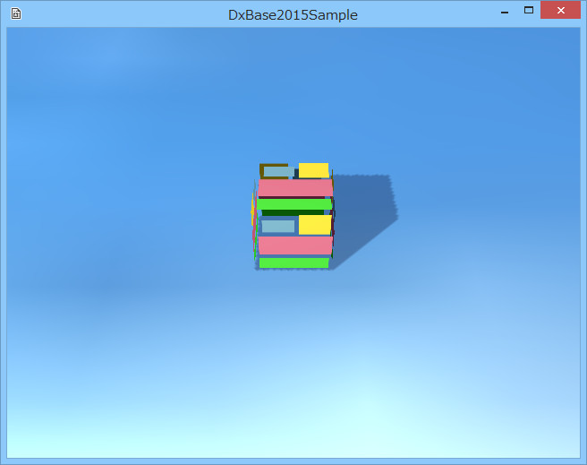

００２．オブジェクトの配置
オブジェクトの配置とは
ゲームステージには
ゲームオブジェクトというオブジェクトを配置します。プレイヤーも敵キャラも、地面も壁も、
ゲームオブジェクトです。
DxBase2015では、
GameObjectクラスか、その派生クラスを作って、それらのインスタンスを配置します。
以下は、この
チュートリアル（Tutorial002）の実行画面です。

図0002a
リソース
最初に覚えておくことは、もう1つ
リソースがあります。DxBase2015では、テクスチャや各頂点バッファ（メッシュ）、オーディオなど、メモリに負担がかかりそうなオブジェクトは
リソースとして登録します。そうすることで、たとえば、ゲームステージからリザルト画面に移行し、再びゲームステージを呼び出したときに、メッシュの読み取りなどに時間がかかりません。
リソースはリソースごとに解除することもできますので、ゲーム中、一度しか使わないメッシュなどは、使用後すぐに破棄することもできます。
リソースの登録
ステージでは、まず
リソースの登録を行います。
Tutorial002のソリューションを開き、
GameStage.h、GameStage.cppを参照してください。
以下は、
GameStage.hにある、
GameStageクラスの宣言部です。
//--------------------------------------------------------------------------------------
// class GameStage : public Stage;
// 用途: ゲームステージクラス
//--------------------------------------------------------------------------------------
class GameStage : public Stage{
//リソースの作成
void CreateResourses();
//ビューの作成
void CreateViews();
//プレートの作成
void CreatePlate();
//ボックスの作成
void CreateBox();
public:
//構築と破棄
GameStage() :Stage(){}
virtual ~GameStage(){}
//初期化
virtual void Create()override;
};
そして以下は、
GameStage.cppの
void GameStage::CreateResourses()の実体です。
テクスチャをリソース化しています。
//リソースの作成
void GameStage::CreateResourses(){
wstring strTexture = App::GetApp()->m_wstrRelativeDataPath + L"trace.png";
App::GetApp()->RegisterTexture(L"TRACE_TX", strTexture);
strTexture = App::GetApp()->m_wstrRelativeDataPath + L"sky.jpg";
App::GetApp()->RegisterTexture(L"SKY_TX", strTexture);
}
ここではテクスチャをリソース化しています。このサンプルで使用しているテクスチャは２つです。それぞれ、ソリューションディレクトリの
mediaというディレクトリに入ってます。
ゲームで使うテクスチャやメッシュなどは、この
mediaディレクトリに入れておきます。
mediaディレクトリの中にサブディレクトリを作成して、その中に入れてもも問題はありません。
App::GetApp()->m_wstrRelativeDataPathというのは、この
mediaディレクトリを指します。相対パスです。
App::GetApp()->m_wstrRelativeDataPathは、最初に実行ファイルの同じディレクトリにある、
mediaディレクトリを探します。そして見つからなければ、実行ファイの一つ上のディレクトリにある
mediaディレクトリを探します。
プロジェクトでは、実行ファイルは、ソリューションディレクトリの
Debug（デバッグモード）、もしくは
Release（リリースモード）、というディレクトリに作成されます。
制作中は、リソースデータはデバッグモードでもリリースモードでも同じディレクトリを指した方が都合がいいです。そのため制作中は、
実行ファイの一つ上のディレクトリにあるmediaディレクトリにまとめた方が便利です。
しかし、リリース後は、
実行ファイと同じディレクトリにmediaディレクトリを置くほうが都合がよいです。ソースを配布するなら別ですが、通常、実行ファイルで配布されますので。
そんなわけでプログラム中では、テクスチャやゲームデータファイルにアクセスするために、
App::GetApp()->m_wstrRelativeDataPathを使用します。
App::GetApp()は、このこのアプリケーションの
アプリケーションクラスのスタティックメンバ関数です。
アプリケーションクラスは、このアプリケーション中、１つだけ存在して、アプリケーション中、共通で使う変数などを参照できます。詳しくはAppクラスのコメントを参照してください。
リソースは
名前をつけて登録します。そうするとその後、アプリケーションが動作している間（意図的に削除しなければ）その
名前でアクセスできます。ここで登録しているテクスチャリソースの名前は、
TRACE_TXとSKY_TXです。
テクスチャはここで実装している、
jpg、png形式のほかに
dds、tga形式に対応しています。（テクスチャ読み込みは、
マイクロソフト社のDirectXTXに依存しています。）
プレートの生成とコンポーネント
地面になっている板を
プレートと称しています。
プレートのようにゲーム中変化しないオブジェクトは、
GameObjectクラスのインスタンスを作成することでゲームに追加できます。
それを行っているのが
GameStage.cppの
void GameStage::CreatePlate()関数です。
//プレートの作成
void GameStage::CreatePlate(){
//ステージへのゲームオブジェクトの追加
auto Ptr = AddGameObject<GameObject>();
//変化コンポーネント（Transform）の取得
auto TrancePtr = Ptr->GetComponent<Transform>();
//スケーリングの設定
TrancePtr->SetScale(200.0f, 200.0f, 1.0f);
//回転の設定
Quaternion Qt;
Qt.RotationRollPitchYawFromVector(Vector3(XM_PIDIV2, 0, 0));
TrancePtr->SetQuaternion(Qt);
//位置の設定
TrancePtr->SetPosition(0, 0, 0);
//描画コンポーネントの追加
auto DrawComp = Ptr->AddComponent<SimplePNTDraw>();
//描画コンポーネントに形状（メッシュ）を設定
DrawComp->SetMeshResource(L"DEFAULT_SQUARE");
//描画コンポーネントテクスチャの設定
DrawComp->SetTextureResource(L"SKY_TX");
//自分に影が映りこむようにする
DrawComp->SetOwnShadowActive(true);
}
ステージに配置される
ゲームオブジェクトは
骨組みのようなものです。それ自体は何も行いませんし表示もしません。
ゲームオブジェクトに
コンポーネントと呼ばれる部品をセットして初めて表示したり、変化したりします。
各ゲームプログラムでは、まず、
ステージにゲームオブジェクトを追加することで作業を開始します。
ゲームオブジェクトを追加する書式は、以下のようになります。
それを行っているのが
GameStage.cppの
void GameStage::CreatePlate()関数です。
//ステージへのゲームオブジェクトの追加
auto Ptr = AddGameObject<GameObject>();
この場合、追加するのは、
GameObjectクラスのインスタンスです。
通常は後で述べる
Boxクラスのように、
GameObjectクラスの派生クラスを作成し、そのインスタンスをAddGameObjectします。
ここではプレートは何も変化しないので、
GameObjectクラスのインスタンスとして作成することが可能です。
AddGameObjectテンプレート関数は追加に成功すると、そのクラスのインスタンスのポインタ（shared_ptr）を返します。
各ゲームでは続いて、そこにコンポーネントを追加するなど、作業を行います。
コンポーネントには状態変化をつかさどるものや、衝突判定を行うもの、物理計算を行うもの、状態変化を手順化できるもの、などがあります。
コンポーネントの追加は
auto DrawComp = Ptr->AddComponent<SimplePNTDraw>();
のように
ゲームオブジェクトのポインタ->AddComponent<コンポーネントクラス名>();
のように使用します。
コンポーネントを得るときの書式は、
ゲームオブジェクトのポインタ->GetComponent<コンポーネントクラス名>();
です。
コンポーネントは、それぞれのゲームオブジェクトに対して
同じ型のコンポーネントは１つしか追加できません。すでに存在するコンポーネントを、AddComponent()した場合、追加せずにすでに存在するポインタを返します。コンポーネントの派生クラスを使用するときは、別にAddComponent()するか、すでにあるコンポーネントを差し替えるかは選べます。
コンポーネントの中で一番重要なのは、変化をつかさどる
Transformコンポーネントです。
Transformコンポーネントだけは例外で、ゲームオブジェクトが作成されたときに自動的にAddComponent()されています。ですから、上記の例のように、追加せずに
//変化コンポーネント（Transform）の取得
auto TrancePtr = Ptr->GetComponent<Transform>();
のように
GetComponent<Transform>()使用します。ほかのコンポーネントは自動的に追加されないので、各プログラムで追加します。
Transformコンポーネントを介して位置や大きさを設定したら、
描画コンポーネントを追加します。
ここでは、
SimplePNTDrawという
描画コンポーネントを追加します。
描画コンポーネントというのは、頂点シェーダーやピクセルシェーダーに直結するコンポーネントで、フレームワークでは何種類かの
描画コンポーネントが用意されています。
SimplePNTDrawは単純なライティングで
頂点、法線、テクスチャUVのフレキシブル頂点フォーマットを持つメッシュ（頂点の集合体）を描画するためのコンポーネントです。３Ｄオブジェクトを描画するコンポーネントはこのほかに
BasicPNTDrawがあります。
描画コンポーネントに限らず、コンポーネントは自作することができます。フレームワークに用意されている描画で不満があれば、ぜひ、どんどん自作してください。コンポーネントの自作方法はのちのサンプルで紹介します。
SimplePNTDrawには
メッシュリソースとテクスチャリソースを渡します。メッシュリソースは必須ですが、テクスチャリソースはオプションです。
//描画コンポーネントに形状（メッシュ）を設定
DrawComp->SetMeshResource(L"DEFAULT_SQUARE");
//描画コンポーネントテクスチャの設定
DrawComp->SetTextureResource(L"SKY_TX");
SKY_TXというテクスチャは、リソース登録をしたテクスチャです。
DEFAULT_SQUAREというのは
プリミティブな厚みのない板です。作成時は縦1.0、横1.0で作成されていますのでそれを傾けたり大きくしたりして使用します。その設定は前述した
Transeformコンポーネントで行っています。
DEFAULT_SQUAREのようなプリミティブなメッシュはほかに、以下種類があります。
| 識別名 |
形状 |
| DEFAULT_SQUARE |
各辺1.0の板 |
| DEFAULT_CUBE |
各辺1.0の立方体 |
| DEFAULT_SPHERE |
直径1.0の球 |
| DEFAULT_CAPSULE |
直径1.0の球を上下につけてる長さ1.0のカプセル |
| DEFAULT_CYLINDER |
直径1.0で長さ1.0のシリンダー |
| DEFAULT_CONE |
直径1.0で高さ1.0のコーン（円錐） |
| DEFAULT_TORUS |
外径の直径1.0のドーナッツ |
| DEFAULT_TETRAHEDRON |
1辺1.0の正4面体 |
| DEFAULT_OCTAHEDRON |
1辺1.0の正8面体 |
| DEFAULT_DODECAHEDRON |
1辺1.0の正12面体 |
| DEFAULT_ICOSAHEDRON |
1辺1.0の正20面体 |
これらのメッシュは、フレームワークであらかじめ登録されているわけですが、サイズなどのパラメータを変えたい時はこれらの形状のメッシュを自作することができます。その際注意したいのは、
Transeformコンポーネントで変形可能かどうかを確認することです。たとえば、直方体は
DEFAULT_CUBEを拡大率を変えることで作成できます。
また、メッシュを作成したうえで一部の頂点を変更してオリジナルなメッシュを作成することもできます。また、0からメッシュを作成することもできます。
メッシュリソースはこのほかに
FbxMeshResourceがあります。FBXフォーマットで作成されたモデルを表示することもできます。もちろんボーンアニメーションも再生可能です。FBXフォーマットの読み込みには、
Autodesk社のfbxsdk(2015.1)を使用しています。
メッシュやテクスチャの設定が終わったら、最後に
影を設定します。
//自分に影が映りこむようにする
DrawComp->SetOwnShadowActive(true);
これは
他者の影を映るようにするという設定です。
影には、影を出す側と、映り込む側があります。片方、もしくは両方尾指定できます。影を出す側の設定は、次のBoxの解説で述べます。プレートは自分の影は出さずに、影を受けるだけの設定です。（プレートにも影を出す設定を実装可能ですが、自己影が大きく映り込むのでおすすめできません）。
Boxの登録
このサンプルにはボックス状のものが1個だけ表示されます。
ゲームステージ（GameStage.cpp）ではボックスを配置するのに、以下のように記述しています。
//ボックスの作成
void GameStage::CreateBox(){
AddGameObject<Box>(Vector3(0.0f,0.5f,0.0f));
}
これは、
Boxクラスのインスタンスを作成して配置せよという意味です。
Boxクラスは
Character.hとCharacter.cppに記載があります。
以下は
Character.hのBoxの宣言部です
//--------------------------------------------------------------------------------------
// class Box : public GameObject;
// 用途: ボックス
//--------------------------------------------------------------------------------------
class Box : public GameObject{
Vector3 m_StartPos;
public:
//構築と破棄
Box(const shared_ptr<Stage>& StagePtr, const Vector3& StartPos);
virtual ~Box();
//初期化
virtual void Create() override;
};
ご覧のように、
BoxクラスはGameObjectの派生クラスとして作成します。そしてデフォルトコンストラクタは作成せずに、かならず
第1引数が、const shared_ptr<Stage>& StagePtrとなるように、コンストラクタを宣言します。これは
フレームワークの仕様で、大変重要な部分です。
第2引数以降は、自由に宣言して構いません（可変長です）。重要なことは
第1引数が、const shared_ptr<Stage>& StagePtrとなること、です。
そしてデストラクタも宣言しています。
このほかに
//初期化
virtual void Create() override;
を多重定義します。
Create()仮想関数は、このインスタンスがステージに追加されたときに自動的に呼ばれます。コンポーネントの登録などはこの関数で行います。
Character.cppでは、コンストラクタ、デストラクタ、そして
Create()仮想関数を記述します。
コンストラクタでは、メンバイニシャライザで、第2引数の値（Boxの位置、Vector3型）を設定します。
フレームワークでは
Vector3型のほかに、
Vector2、Matrix4X4、Quaternion型などを持っていて、ライブラリ内の
MathVector.hなどMathで始まるヘッダで定義されています。主にDirectXMathで使用する、XMVECTORなどのラッピングクラス、関数群です。XMVECTORは、SSE2をサポートする最適化された機能ですが、使用するのにロード関数やストア関数を駆使しなければならず、荷が重いです。そのためラッピング関数群を用意しています。こうすることで、XMVECTORを意識することなくVectorやMatrixを扱えるようになっています。
以下は
Create()仮想関数の実体です。
//初期化
void Box::Create(){
auto PtrTransform = GetComponent<Transform>();
PtrTransform->SetScale(1.0f, 1.0f, 1.0f);
PtrTransform->SetRotation(0.0f, 0.0f, 0.0f);
PtrTransform->SetPosition(m_StartPos);
//影をつける
auto ShadowPtr = AddComponent<Shadowmap>();
ShadowPtr->SetMeshResource(L"DEFAULT_CUBE");
//描画コンポーネント
auto PtrDraw = AddComponent<BasicPNTDraw>();
PtrDraw->SetMeshResource(L"DEFAULT_CUBE");
PtrDraw->SetTextureResource(L"TRACE_TX");
//透過処理
SetAlphaActive(true);
}
ここではプレートのところで説明したように、
コンポーネントの設定を行ってます。
まず、
Transformを
Getして、スケーリング、回転、位置（コンストラクタのパラメータで渡される）を設定します。
その後
//影をつける
auto ShadowPtr = AddComponent<Shadowmap>();
ShadowPtr->SetMeshResource(L"DEFAULT_CUBE");
のように影をつけます。こちらはプレートと違い、
影を出す方です。
Shadowmapというのはいわゆる
シャドウマップです。ライトを視点にしたオブジェクトの見え方を特殊なバッファ（ステンシルバッファ）に書き込み、実際のオブジェクトの描画で合わせて表示する仕組みです。
シャドウマップと合わせて表示するかどうかの設定が、プレートのところで説明した
SetOwnShadowActive()です。
影の出し方はいろいろありますが、フレームワークでは、
シンプルで、ゲームに負担をかけないをモットーにしています。そのため、複数のライトは使用できますが、影を作り出すのはビューの先頭のライトです。ですから、影の向きをかえたければ、ビューの0番目のライトの向きを変更してください。
影は形状を指定できます。通常は、表示するメッシュと同じものを使用しますが、たとえば丸影にしたければ
ShadowPtr->SetMeshResource(L"DEFAULT_TORUS");
のようにすればドーナッツ影になります（かなり違和感がありますが・・・）
最後に透過処理です。ここで使用している
TRACE_TXは透明色も含みます。そのため、透過処理が必要です。
//透過処理
SetAlphaActive(true);
このように、透過処理はGameObjectの派生クラス（ここではBoxクラス）のメンバ関数で指定します。
半透明処理も可能ですが、サンプルで紹介します。